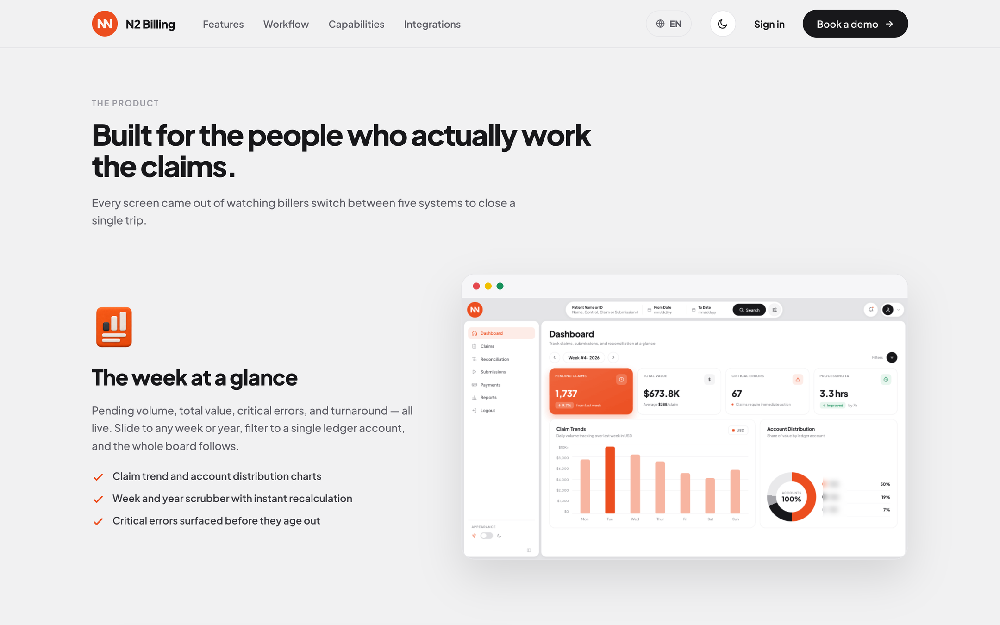
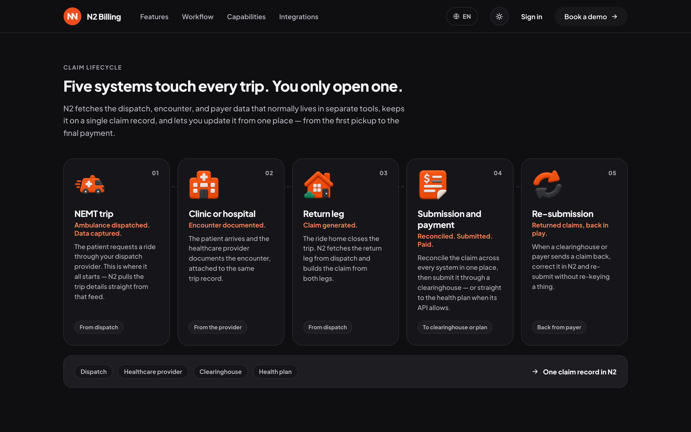

N2 is a centralized billing and claims platform designed
for the medical industry — specifically for Non-Emergency Medical Transportation (NEMT/NMT) providers that
bill health plans for every patient trip. Over 8 months, I led the UX Design of the N2 platform and the UI
Design of its marketing landing page, applying the Design Thinking methodology to turn a fragmented,
spreadsheet-heavy medical billing workflow into a single, guided process — from dispatch to final payment.
This project is under a confidentiality agreement. Partner systems, account numbers, and any personal data have been anonymized or blurred. All patient and
claim data shown is fictional.
Case Study
Project Overview
The Problem
In the medical industry, every NEMT trip becomes a claim that has to be corrected,
reconciled, submitted, and paid. The client's billing team relied on five disconnected tools — dispatch
systems, healthcare provider records, a clearinghouse, health plan portals, and spreadsheets — to close a
single trip. Data had to be exported, cleaned, and matched by hand every week, which led to mismatches,
rework, missed underpayments, and very little visibility into claim status.
The Goal
Design a single source of truth for medical billing that lets claims and accounting
teams correct, validate, reconcile, and submit claims in one place — reducing mismatches and rework,
surfacing payment discrepancies automatically, and improving payment accuracy for a medical transportation
provider. In parallel, design a landing page that clearly communicates N2's value to the NEMT market.
My Role
Lead UX Designer for the N2 platform and UI Designer for the N2 landing page. The scope
of this engagement was research and design; development was not part of this phase.
Responsibilities
Map the end-to-end medical billing workflow
Conduct user research and identify pain points
Run a competitive audit of the NEMT software market
Define problem statement, hypothesis, and value proposition
Create storyboard, information architecture, and user flows
Design paper and digital wireframes
Design high-fidelity prototypes for desktop and mobile
Design the UI of the landing page
User Research
Summary
Working closely with the billing team, I mapped a full weekly cycle to understand
how claims move through the medical billing process. Each week, specialists logged into three dispatch systems, exported
the previous day's trips, cleaned and standardized the data in spreadsheets, matched trips by patient name
and amount, checked modifier codes, built mismatch reports, corrected discrepancies system by system, and
submitted claims every Thursday — only to validate payments manually on Friday. The research revealed a
workflow that was tedious, time-pressured, and built on low trust in the data.
User Personas
James
"If the data isn't clean, I can't make decisions."
Goals
Reconcile payments accurately and reduce discrepancies quickly.
Track claims' status in a centralized location.
Frustrations
Manual payment matching.
Heavy spreadsheet dependency.
Inconsistent data formatting.
James is a 31-year-old Claims Specialist at a medical
transportation provider. At week-end, he exports payment reports and manually matches them to trip
records to identify discrepancies. When the numbers don't align, he builds his own spreadsheets,
frustrated that the system doesn't automatically flag underpayments or provide a clear
reconciliation view.
User Journey Map
Mapping James' weekly journey exposed eight steps, most of them manual, and the
emotions behind each one — from "routine" and "tedious" to "suspicious" and "time-pressured":
Export payment reports from every dispatch system.
Clean and format the data (dates, names, currency).
Match trip records between systems by patient and amount.
Build a custom spreadsheet to analyze mismatches.
Manually correct the discrepancies found in each system.
Reconcile billing and claims.
Submit claims weekly, every Thursday.
Validate payments received on Friday and re-submit mismatches.
Key improvement opportunities: an auto-matching engine, smart discrepancy
flagging, a reconciliation dashboard, standardized data formatting, comments and history inside the platform,
and centralized claim submission and re-submission.
Problem Statement
James is a Claims Specialist who needs a streamlined process to correct
and submit claims because he wants to reduce mismatches and rework.
Hypothesis Statement
If James can correct, validate, and submit claims in bulk from the same place,
then he can reduce mismatches and rework and receive accurate payments.
Competitive Audit
I audited five leading NEMT and healthcare transportation platforms — including
the client's existing billing tool — to understand how the medical transportation software market approaches
billing. Competitors offer robust all-in-one suites, but they share the same weaknesses: complex interfaces
with steep learning curves, overloaded feature sets, and weak reconciliation against payer remittance data.
Gap: No truly unified place to correct dispatch data, submit claims, and reconcile
payments.
Gap: Little automation for detecting discrepancies between trips and payments.
Gap: Limited transparency in claim status and poor error prevention before
submission.
Opportunity: A clean, intuitive interface tailored to billing staff, with end-to-end
visibility from trip creation to final payment.
Value Proposition
N2 enables medical billing teams to correct claims, validate payments, and submit
clean claims in one place — reducing mismatches and rework. It centralizes claim correction, automatically
matches payments against claims to flag underpayments, and gives a single view of every claim's status.
Story Board
(Click on image to enlarge)
Information Architecture
(Click on image to enlarge)
User Flow
(Click on image to enlarge)
Paper Wireframe
(Click on image to enlarge)
Low-fidelity Prototype
(Click on image to enlarge)
High-Fidelity Prototype
The high-fidelity prototype brings the full medical billing cycle into one
interface: a dashboard with pending claims, total value, critical errors, and turnaround time; claims and
reconciliation views that compare amounts across systems side by side; and submissions, payments, and reports
— all filterable by week and account.
(Click on image to enlarge)
Mobile
The storyboard showed James wanting to check claim status on the go, so every
key screen was designed responsively for mobile.
(Click on image to enlarge)
Landing Page UI
I also designed the UI of N2's landing page to introduce the product to NEMT
providers across the medical industry. An illustrated, scroll-driven journey follows a trip from dispatch to
clinic, return leg, submission, and payment — showing how five systems become one claim record in N2.


Accesibility
Billing specialists in the medical industry spend entire days inside
data-dense screens, so N2 includes light and dark modes for visual comfort, a language toggle, high-contrast status badges that pair color with text labels, clear headings, and responsive layouts
for desktop and mobile.
Next Steps
Usability testing: Validate the high-fidelity prototype with medical billing
specialists and measure time on task and error rates against the current workflow.
Development handoff: Prepare specs and a component library so the platform and
landing page can move into development.
Integrations: Define the data contracts with dispatch, clearinghouse, and health plan
systems that power auto-matching and discrepancy alerts.
Let's get in touch
Have a project in mind? Let's build something great together!